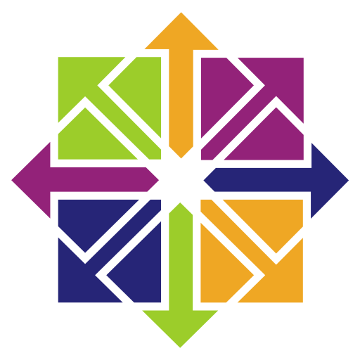
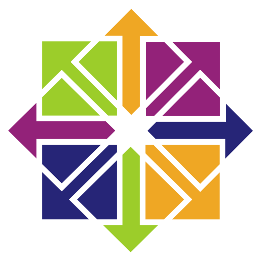
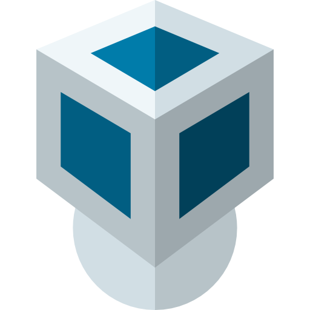
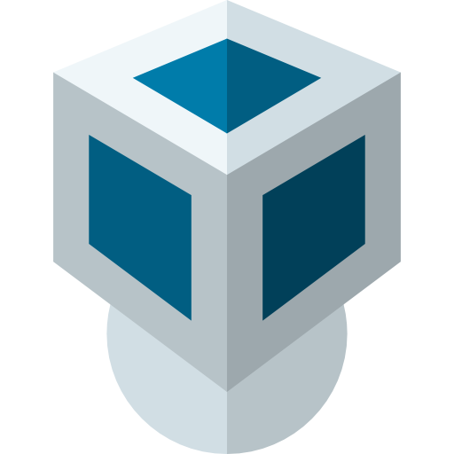
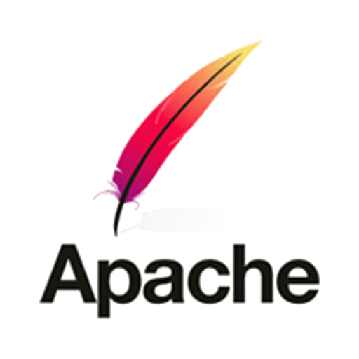
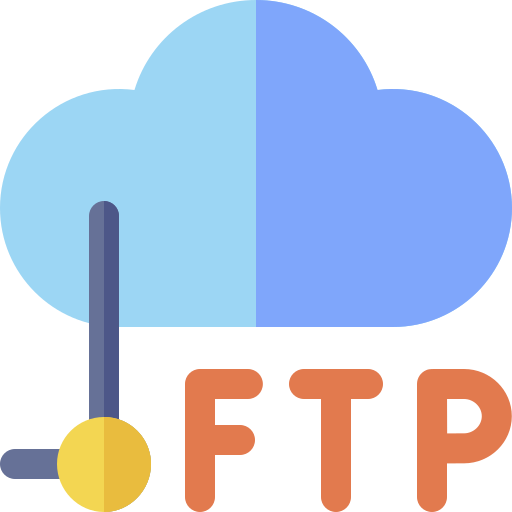
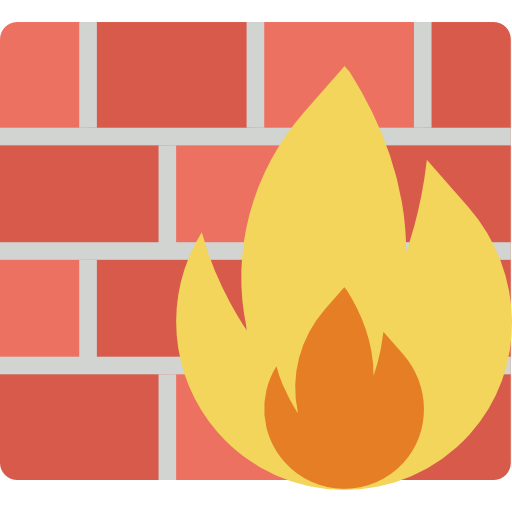
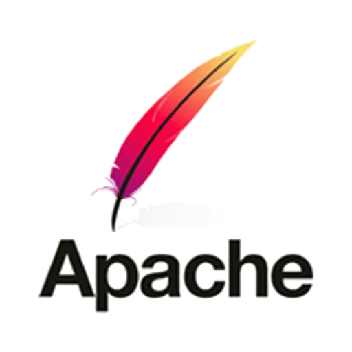
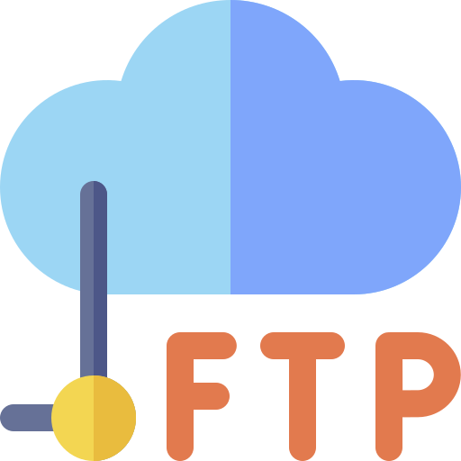
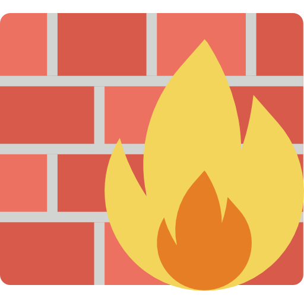

Technicien supérieur systèmes et réseaux
expériences professionnelles 3 ans
Compétences
Maintenance informatique & gestion des réseaux
- Administration de base des réseaux et des sous-réseaux
- Configurer un routeur (pfsense)
- Intervenir sur un poste à distance ( en SSH)
- Paramétrer et maintenir le OpenVPN
- Administration de nextcloud
- Administration CMS Wordpress
- Partage de fichier (Windows, Linux, Unix )
- Virtualisation (Proxmox, Virtualbox)
- Paramétrer librenms
- Gestion de disque
- GNS3 (virtualisation de réseaux)
- Installer un système d'exploitation (Windows, Linux, Unix)
- Relier des postes en réseau
- Réaliser des sauvegardes
- Relier des périphériques
- Diagnostiquer une panne
- Remplacer les pièces défectueuses (carte mère et autres composants)
- Nettoyage et Désinfection
compétence technique
 



 

 







Formations
- Découverte du Bureau GNU/Linux
- Bureaux Virtuels
GNU/Linux LDNR Labège / De juin 2019 à juillet 2019
Systèmes Électroniques et Numériques Lycée Pablo Picasso Perpignan / De janvier 2015 à janvier 2017
Expériences
| les métiers | Nom de Entreprise | Lieu | Date / Periodes |
|---|---|---|---|
| Technicien Informatique contrat service civique |
Association de Recyclage Catalan | Perpignan, France | De 14/06/2021 à 12/02/2022 |
| Magasinier | B&M Baboo | Perpignan, France | De mars 2021 à avril 2021 |
| Technicien Informatique | Association de Recyclage Catalan | Perpignan, France | Mars 2021 |
| Technicien Installation: climes, inter-phone, portillon, etc.. |
MITI | Cabestany, France | D'octobre 2020 à novembre 2020 |
| Formation Technicien Supérieur Système et Réseaux (niveau III) Formation de 850 h |
LDNR | toulouse, Labège | D'octobre 2019 à juillet 2020 |
| Technicien en maintenance informatique | mairie de Perpignan | Perpignan, France | Janvier 2019 |
| Technicien en maintenance informatique | Association route 66 | Perpignan, France | De novembre 2018 à décembre 2018 |
| Magasinier | CCE Cabestany | Perpignan, France | Septembre 2018 |
| Technicien en maintenance informatique | Recyclage Catalan | Perpignan, France | Juin 2018 |
| Action Declic | AFPA | Perpignan, France | Juin 2018 |
| Installateur de fibre optique | SOTRANASA | Perpignan, France | De juin 2017 à juillet 2017 |
| Magasinier | CCE Cabestany | Perpignan, France | De février 2017 à mars 2017 |